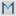

mosaic · 3C.4N · favicon system
The mosaic M
A single uppercase M, assembled as an inlaid tessera field. The deep-navy structure carries 3C.4N into browser chrome; three blue center tiles preserve the original wordmark’s quiet internal intelligence.
One mark. Two environments.
The adaptive SVG switches its mineral field and letter contrast with the operating system theme. Its 9×9 construction remains crisp at 16 pixels and feels materially consistent at app-icon scale.
Light theme
navy M · mineral fieldDark theme
frost M · midnight fieldBrowser-tab proof
actual 16px asset
mosaic — Strategic Financemosaic — Strategic Finance